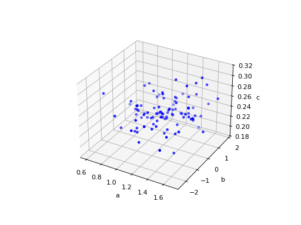

Miscellaneous Plotting Functions – catsim.plot¶
Module with functions for plotting IRT-related results.
-
catsim.plot.gen3d_dataset_scatter(items: numpy.ndarray, title: str = None, filepath: str = None, show: bool = True)[source]¶ Generate the item matrix tridimensional dataset scatter plot
Parameters: - items (
ndarray) – the item matrix - title (
str) – the scatter plot title - filepath (
str) – the path to save the scatter plot - show (
bool) – whether the generated plot is to be shown
- items (
-
catsim.plot.item_curve(a: float = 1, b: float = 0, c: float = 0, d: float = 1, title: str = None, ptype: str = 'icc', max_info=True, filepath: str = None, show: bool = True)[source]¶ Plots ‘Item Response Theory’-related item plots
When both curves are plotted in the same figure, the figure has no grid, since each curve has a different scale.
Parameters: - a (
float) – item discrimination parameter - b (
float) – item difficulty parameter - c (
float) – item pseudo-guessing parameter - d (
float) – item upper asymptote - title (
str) – plot title - ptype (
str) – ‘icc’ for the item characteristic curve, ‘iic’ for the item information curve or ‘both’ for both curves in the same plot - max_info (
bool) – whether the point of maximum information should be shown in the plot - filepath (
str) – saves the plot in the given path - show (
bool) – whether the generated plot is to be shown
- a (
{kind=link}
{kind=link}
{kind=link}
{kind=link}
{kind=link}
{kind=link}
-
catsim.plot.item_exposure(title: str = None, simulator: catsim.simulation.Simulator = None, items: numpy.ndarray = None, par: str = None, hist: bool = False, filepath: str = None, show: bool = True)[source]¶ Generates a bar chart for the item bank exposure rate. The x axis represents one of the item parameters, while the y axis represents their exposure rates. an examinee’s test progress.
Parameters: - title (
str) – the plot title. - simulator (
Simulator) – a simulator which has already simulated a series of CATs, containing estimations to the examinees’ proficiencies and a list of administered items for each examinee. - items (
ndarray) – an item matrix containing item parameters and their exposure rate in the last column. - par (
str) – a string representing one of the item parameters to order the items by and use on the x axis, or None to use the default order of the item bank. Please note that, if hist=True, no sorting will be done. - hist (
bool) – if True, plots a histogram of item exposures. Otherwise, plots a dotted line chart of the exposures, sorted in the x-axis by the parameter chosen in par. - filepath (
str) – the path to save the plot. - show (
bool) – whether the generated plot is to be shown.
- title (
{kind=link}
{kind=link}
{kind=link}
{kind=link}
-
catsim.plot.test_progress(title: str = None, simulator: catsim.simulation.Simulator = None, index: int = None, thetas: list = None, administered_items: numpy.ndarray = None, true_theta: float = None, info: bool = False, var: bool = False, see: bool = False, reliability: bool = False, filepath: str = None, show: bool = True)[source]¶ Generates a plot representing an examinee’s test progress. Note that, while some functions increase or decrease monotonically, like test information and standard error of estimation, the plot calculates these values using the examinee’s proficiency estimated at that given time of the test. This means that a test that was tought to be informative at a given point may not be as informative after new estimates are done.
Parameters: - title (
str) – the plot title. - simulator (
Simulator) – a simulator which has already simulated a series of CATs, containing estimations to the examinees’ proficiencies and a list of administered items for each examinee. - index (
int) – the index of the examinee in the simulator whose plot is to be done. - thetas (
list) – if aSimulatoris not passed, then a list of proficiency estimations can be manually passed to the function. - administered_items (
ndarray) – if aSimulatoris not passed, then a matrix of administered items, represented by their parameters, can be manually passed to the function. - true_theta (
float) – the value of the examinee’s true proficiency. If it is passed, it will be shown on the plot, otherwise not. - info (
bool) – plot test information. It only works if both proficiencies and administered items are passed. - var (
bool) – plot the estimation variance during the test. It only works if both proficiencies and administered items are passed. - see (
bool) – plot the standard error of estimation during the test. It only works if both proficiencies and administered items are passed. - reliability (
bool) – plot the test reliability. It only works if both proficiencies and administered items are passed. - filepath (
str) – the path to save the plot - show (
bool) – whether the generated plot is to be shown
- title (
{kind=link}
{kind=link}
{kind=link}
{kind=link}